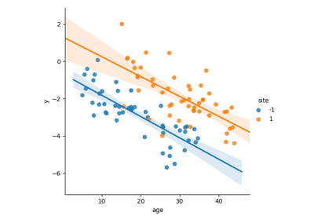

Massive univariate linear model.
Univariate statistics: F-test and T-test with MULM (Massive univariate linear model)¶





Gallery generated by Sphinx-Gallery
Follow us
© 2021,
pylearn-mulm developers
.
Inspired by AZMIND template.
Inspired by AZMIND template.